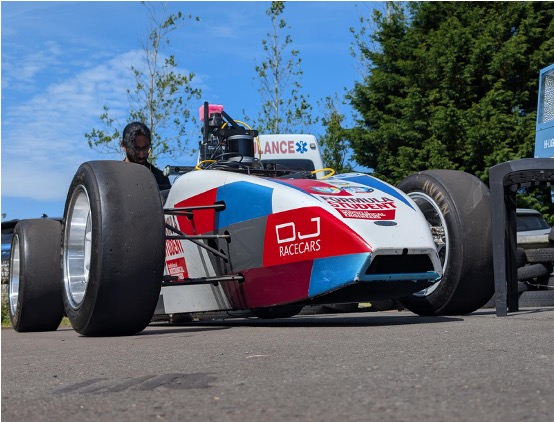

Aeronautical engineering & autonomous systems
Demir
Kucukdemiral.
MEng Aeronautical Engineering student at the University of Glasgow, exploring the intersection of autonomous systems and aerospace engineering.
Explore my workSelected work
Engineering in practice

01 / System identification
Learning vehicle dynamics from data
A hybrid prediction method combining a nominal vehicle model with historical input-output data.
View project →02 / Motion planning
Finding the faster racing line
Genetic algorithms for global path planning and minimum-lap-time trajectory optimisation.
View project →03 / Simulation
A platform for autonomous research
A modular vehicle research platform for simulation, planning, perception, and control.
View project →Research notes
Autonomous Systems Handbook
A growing collection of notes on robotics, control theory, and the mathematics behind autonomous systems.